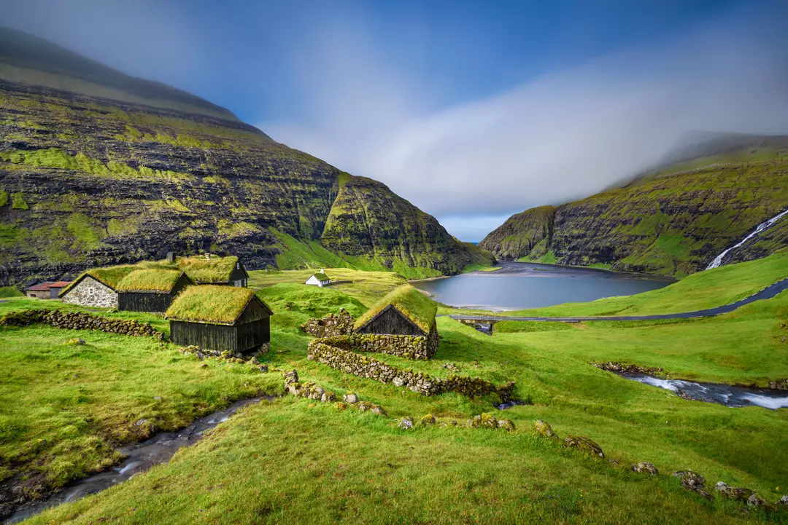

-

Stockholm is the capital and most populous city of Sweden, built across 14 islands where Lake Mälaren meets the Baltic Sea -

Vibrant aurora borealis dancing over the traditional red fishing cabins of Hamnøy, Lofoten Islands, Norway. -

Traditional turf-roofed cottages nestled in the lush, dramatic valley of Saksun on Streymoy Islandm, Faroe Islands.